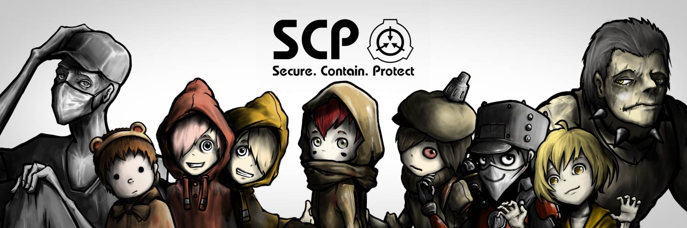

|  | |||
|
人类的存在已经延续了数十万年，但只有最近的4000年才真正是我们的时代。 那么，信史出现之前的无数时间里我们在做些什么？ 我们瑟缩在洞窟中，围坐在小小的篝火边，畏惧着我们所不了解的事物——不 物换星移，它们陨落而人类崛起。我们恐惧的事物越来越少，我们的世界开始 然而，那些无法解释的事物从未真正走出我们的视野，就好像这个世界需要它 我们不会再退回到黑暗、蒙昧、恐怖的夜晚。我们不会被未知所驾驭。 我们不能再度生活在恐惧之中。没有其他事物能保护我们，我们必须保护我们 当其他人沐浴在阳光下时，我们要在黑暗中对抗它们，遏制它们，将它们隔离 我们控制，我们收容，我们保护。 —The Administrator |
||
All Rights Reserved.
|
|||